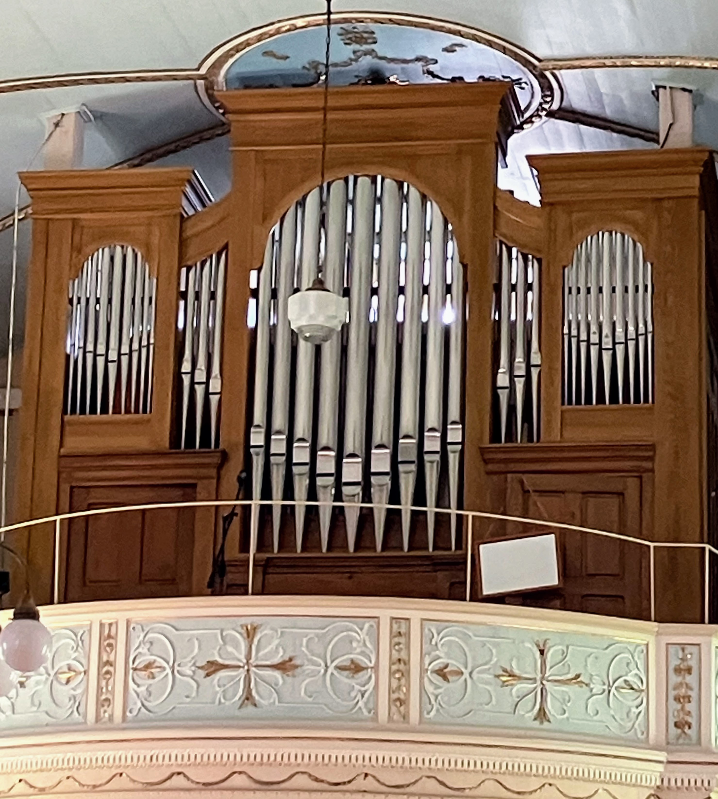
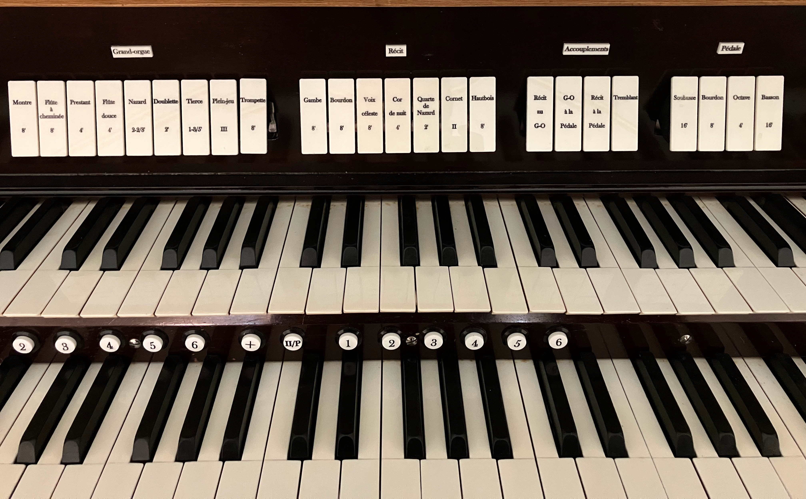
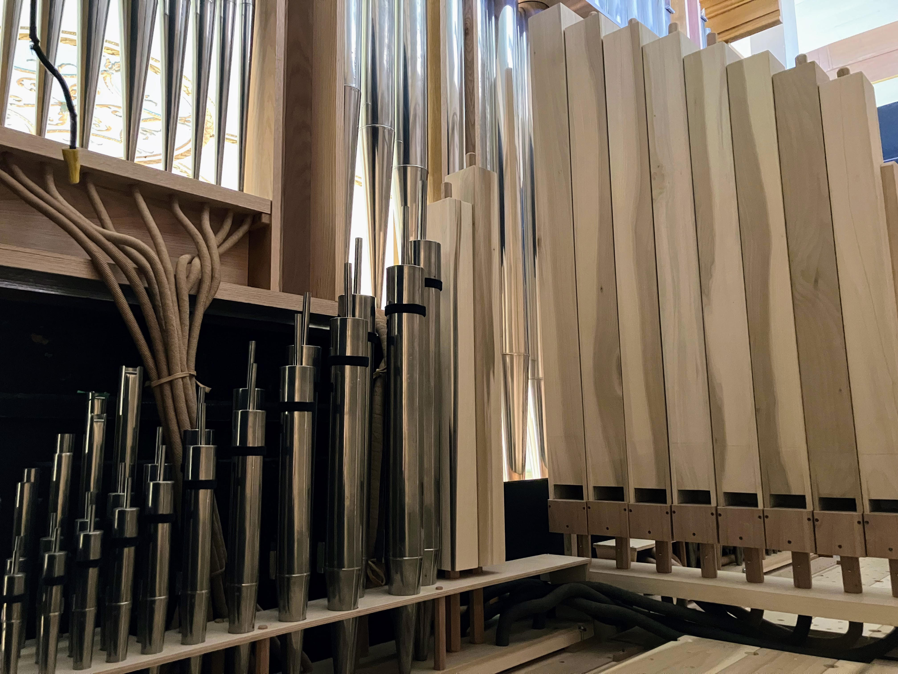
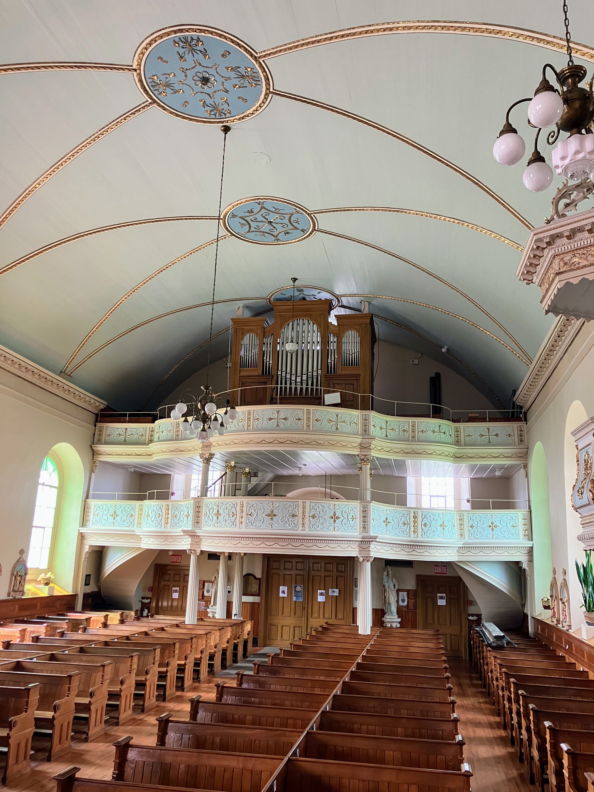

Galerie Photos
Découvrez l'instrument en images : son buffet, sa console à traction mécanique et les détails de sa tuyauterie.

Vue générale de la façade et des tuyaux en montre.

La console avec les tirants de jeux et les claviers.

Aperçu de la tuyauterie.

L'orgue installé dans la tribune de l'église.